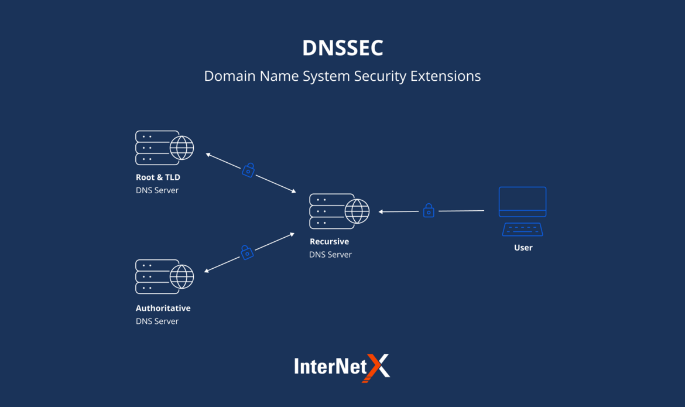
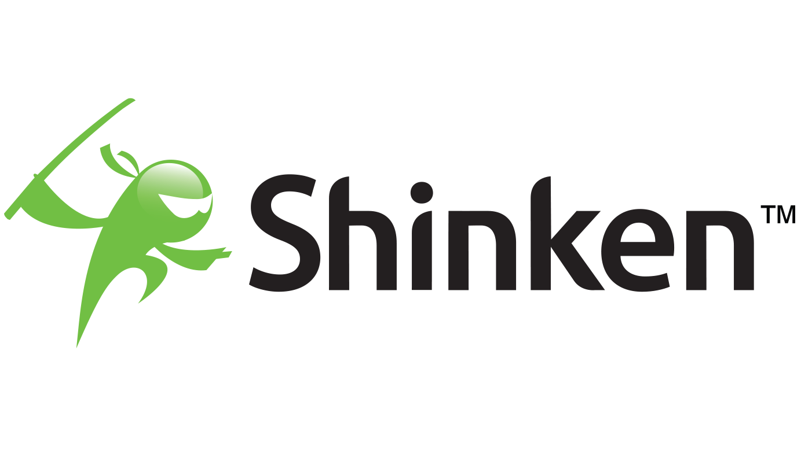
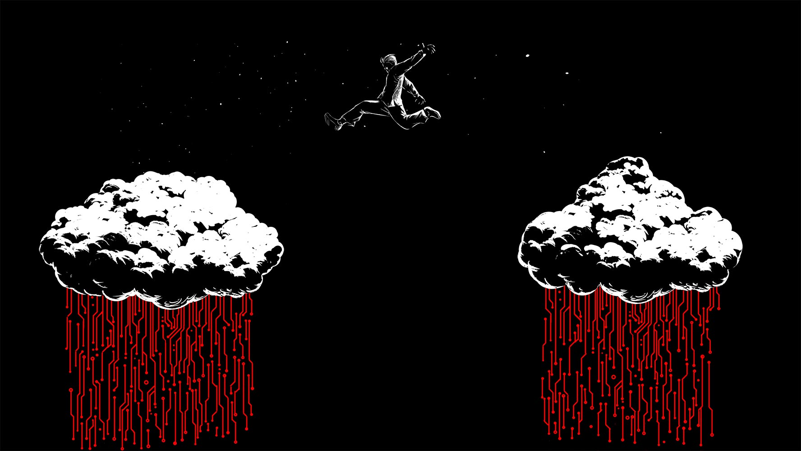

Portfolio
-
 Mise en place et configuration d'une extension de sécurité sur un serveur DNS "DNSSEC"
La mise en place de DNSSEC (Domain Name System Security Extensions) sur un serveur DNS renforce la sécurité en garantissant l'authenticité des données DNS. Il faut générer des clés cryptographiques, signer la zone DNS avec ces clés, publier les clés publiques dans la zone parente, configurer le serveur DNS pour prendre en charge DNSSEC, et effectuer des tests de validation. La surveillance continue et la documentation sont essentielles. DNSSEC contribue à prévenir la falsification des données DNS, améliorant ainsi la sécurité globale du réseau.
-
 SUPERVISION D'UNE ARCHITECTURE INFORMATIQUE AVEC L'OUTIL SHINKEN
Superviser une architecture informatique avec Shinken est essentiel pour garantir la disponibilité et les performances. Shinken, basé sur Nagios, permet de surveiller les ressources informatiques de manière proactive. Les étapes clés incluent l'installation, la configuration des hôtes et des services, la création de règles de notification, la personnalisation des tableaux de bord, la planification des vérifications, la sécurisation, les tests, et la documentation. Cette supervision continue assure la stabilité et la sécurité de l'infrastructure. Shinken facilite la détection précoce des problèmes, minimisant ainsi les interruptions de service et contribuant à une meilleure gestion des systèmes informatiques.
-
Système de détection des intrusions SNORT
Snort est un puissant système de détection d'intrusions (IDS) open source qui analyse le trafic réseau en temps réel. Il identifie les comportements suspects ou les signatures de menaces préconfigurées. Avec une flexibilité de personnalisation des règles, Snort peut détecter diverses menaces, notamment les tentatives d'intrusion, les attaques par déni de service, et plus encore. Cet outil offre une surveillance en temps réel, génère des alertes pour les administrateurs, et facilite les enquêtes sur les incidents de sécurité. Il est essentiel pour renforcer la sécurité réseau et protéger contre les cybermenaces.
-
 Réalisation des attaques sur une architecture dans le cloud .
L'étude éthique des vulnérabilités, comme la SQL injection, implique l'acquisition de compétences en sécurité informatique de manière responsable. Cela se fait par le biais de formations, de compétitions CTF légales et d'environnements de test isolés. Les plateformes d'apprentissage en ligne et les communautés de sécurité sont d'excellentes ressources pour renforcer ces compétences. Il est essentiel de respecter la légalité en obtenant l'autorisation pour tester la sécurité d'un système. Toute utilisation malveillante de ces compétences est contraire à l'éthique et à la loi. En adoptant une approche responsable, vous contribuez à renforcer la sécurité des systèmes informatiques tout en maintenant l'intégrité et la légalité de vos actions.
-
mise en place d'un serveur de supervision d'un systeme
d'information avec CACATI-NAGIOS La mise en place d'un serveur de supervision pour un système d'information avec Cacti et Nagios implique plusieurs étapes essentielles. Tout d'abord, vous devez planifier vos besoins de surveillance. Ensuite, installez Cacti et Nagios sur un serveur Linux ou Unix. Configurez Cacti pour collecter des données de performance et créer des graphiques. Configurez Nagios pour surveiller la disponibilité des services et des périphériques, en créant des règles et des contacts. Intégrez Cacti et Nagios pour une surveillance complète. Effectuez des tests, personnalisez les paramètres, et assurez-vous de maintenir et de documenter la configuration. Cette approche permettra une gestion efficace de votre système d'information en anticipant les problèmes potentiels.
-
L’évaluation de la Sécurité de l’Active Directory
L'évaluation de la sécurité de l'Active Directory est cruciale pour garantir la protection des données et des systèmes. Elle implique l'analyse des Politiques de Groupe (GPO), la gestion des contrôles d'accès, la vérification des stratégies d'authentification, la surveillance des journaux d'audit, la mise à jour des correctifs, la considération de l'authentification multifacteur (MFA), la mise en place de sauvegardes et de plans de reprise d'activité (PRA), la formation du personnel, les tests de pénétration et la documentation exhaustive. Cette approche proactive renforce la sécurité de l'Active Directory, élément clé de l'infrastructure informatique.